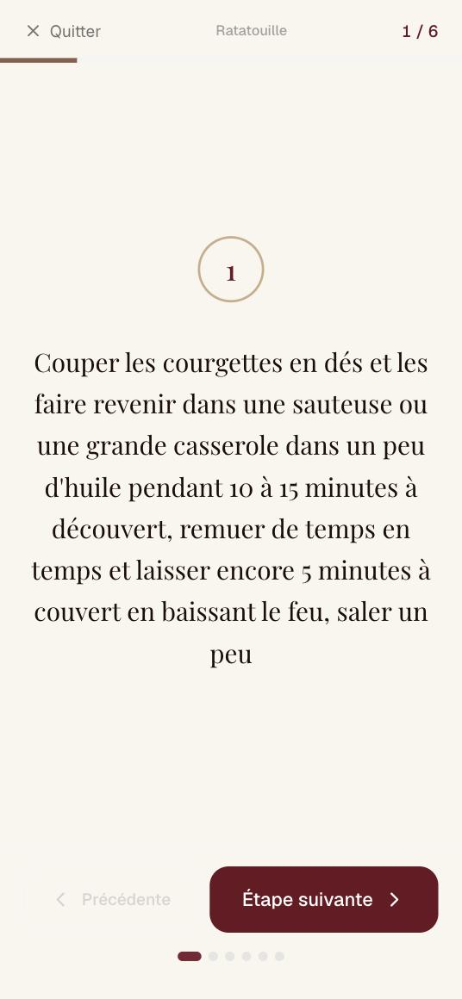
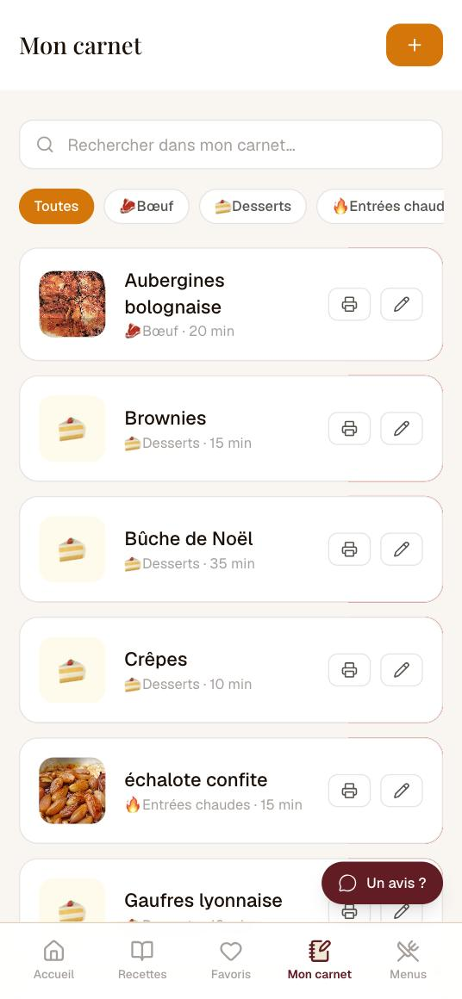
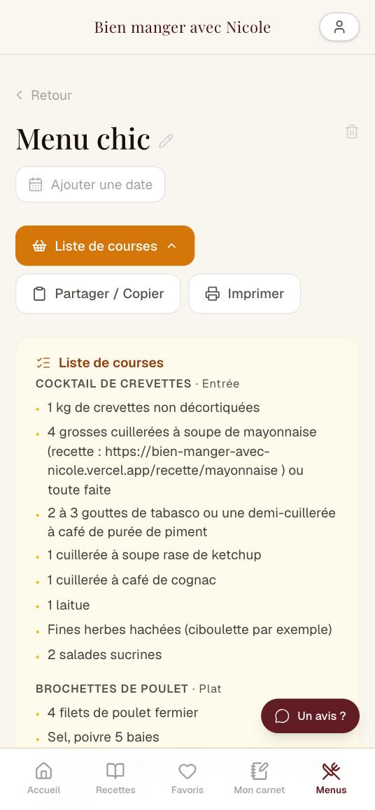

Bien plus qu’un livre
Tout ce qu’il faut pour passer en cuisine
Les recettes de Nicole
Classées par catégorie, avec les temps, le matériel, la conservation et les accompagnements.
Votre propre carnet
Ajoutez vos recettes à vous, à côté de celles de Nicole, et vos notes sur chaque plat.
Menus et courses
Composez un menu, la liste de courses se fait toute seule.
Gratuit, ou complet avec le livre
La version gratuite donne accès à une partie des recettes et des fonctionnalités. L’achat du livre débloque tout, sans abonnement.
Dans l’app
De la recette à l’assiette
Des recettes complètes
Chaque fiche donne les temps de préparation et de cuisson, le coût par personne, le matériel et la conservation. Les quantités s’adaptent au nombre de convives.
- Favoris en un geste
- Impression d’une recette
- Partage avec vos proches
Le mode cuisine
Une étape à la fois, en gros caractères, lisible de loin même les mains pleines de farine. On passe d’une étape à l’autre d’un simple appui.

Mon carnet
Votre carnet de recettes personnel : vos plats, vos catégories, vos photos. Chaque recette s’imprime ou se modifie à tout moment.

Menus et liste de courses
Rassemblez une entrée, un plat et un dessert dans un menu, datez-le, et récupérez la liste de courses de tous les ingrédients.
- Liste regroupée par recette
- À partager, copier ou imprimer

Bon appétit !
Ouvrez l’app pour parcourir les recettes, puis installez-la sur l’écran d’accueil de votre téléphone.
Ouvrir Bien manger avec Nicole